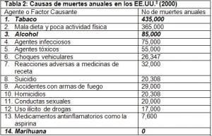

La marihuana es la droga ilegal más consumida en el planeta. Se estima que hay entre 129 y 191 millones de usuarios de cannabis en todo el mundo, es decir alrededor de entre un 2,9% y un 4,3% de la población mundial de entre 15 y 64 años consumen cannabis de forma habitual u ocasional.
Aún siendo la droga ilegal más consumida y tener un gran número de usuarios no se conoce todavía ninguna muerte relacionada directamente con el consumo de marihuana. Existen diferentes estudios que demuestran los datos aportados, aunque es de conocimiento general que la marihuana no genera riesgos de salud importantes para el organismo.
Desde plataformas prohibicionistas se hace un gran esfuerzo por enmascarar los beneficios de el uso de la marihuana terapéutica y defender los intereses de las multinacionales farmacéuticas que controlan el negocio de los medicamentos.
